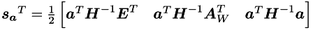
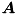
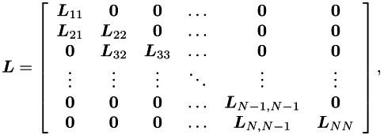
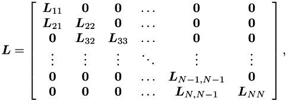

Once projected Hessian is formed we can use Cholesky decomposition . to obtain Langrange multipliers.
![$ \newcommand{\mbm}[1]{\mbox{\boldmath $#1$}}\\ \mbm{L} = \left[ \begin{array}{cccccc} \mbm{L}_{11} & \mbm{0} & \mbm{0} & \dots & \mbm{0} & \mbm{0} \\ \mbm{L}_{21} & \mbm{L}_{22} & \mbm{0} & \dots & \mbm{0} & \mbm{0} \\ \mbm{0} & \mbm{L}_{32} & \mbm{L}_{33} & \dots & \mbm{0} & \mbm{0} \\ \vdots & \vdots & \vdots & \ddots & \vdots & \vdots \\ \mbm{0} & \mbm{0} & \mbm{0} & \dots & \mbm{L}_{N-1,N-1} & \mbm{0} \\ \mbm{0} & \mbm{0} & \mbm{0} & \dots & \mbm{L}_{N,N-1} & \mbm{L}_{NN} \end{array} \right], $](form_47.png)
Directly from observation we have

In the second step ![$\newcommand{\mbm}[1]{\mbox{\boldmath $#1$}} \mbm{L}_{21}^T$](form_49.png) is computed by forward substitution, and in the third step, forming
is computed by forward substitution, and in the third step, forming ![$\newcommand{\mbm}[1]{\mbox{\boldmath $#1$}} \mbm{L}_{22}$](form_50.png) requires the computation of the Cholesky factors of .
requires the computation of the Cholesky factors of .
Update of Cholesky factor
Let ![$\newcommand{\mbm}[1]{\mbox{\boldmath $#1$}} \mbm{a}_i^T$](form_52.png) be the normal to the i-th inequality constraint (assumed to be a simple bound). Define the matrix
be the normal to the i-th inequality constraint (assumed to be a simple bound). Define the matrix
![$ \newcommand{\mbm}[1]{\mbox{\boldmath $#1$}} \mbm{C} = \left[\begin{array}{c} \mbm{E} \\ \mbm{A}_{W}\end{array}\right] $](form_53.png)
where the rows of ![$\newcommand{\mbm}[1]{\mbox{\boldmath $#1$}} \mbm{A}_W$](form_54.png) contain the normals to the inequality constraints in the working set.
contain the normals to the inequality constraints in the working set.
If a new constraint must be added to the active set, then the projected Hessian matrix must be updated:
![$ \newcommand{\mbm}[1]{\mbox{\boldmath $#1$}}\\ \frac{1}{2} \left[ \begin{array}{c} \mbm{C}\\ \mbm{a}^T\\ \end{array} \right] \mbm{H}^{-1} \left[\mbm{C}^T \quad \mbm{a}\right] = \frac{1}{2} \left[ \begin{array}{cc} \mbm{C} \mbm{H}^{-1} \mbm{C}^T & \mbm{C} \mbm{H}^{-1} \mbm{a}\\ \mbm{a}^T \mbm{H}^{-1} \mbm{C}^T & \mbm{a}^T \mbm{H}^{-1} \mbm{a}\\ \end{array} \right] $](form_55.png)
In general the last line is
![$ \newcommand{\mbm}[1]{\mbox{\boldmath $#1$}}\\ \mbm{s_a}^T = \frac{1}{2} \left[ \mbm{a}^T \mbm{H}^{-1} \mbm{C}^T \quad \mbm{a}^T \mbm{H}^{-1} \mbm{A}_W^T \quad \mbm{a}^T \mbm{H}^{-1} \mbm{a} \right] $](form_56.png)
Note that ![$ \newcommand{\mbm}[1]{\mbox{\boldmath $#1$}} \frac{1}{2} \mbm{a}^T \mbm{H}^{-1} \mbm{A}_W^T $](form_57.png) is a vector of zeros. While
is a vector of zeros. While ![$ \newcommand{\mbm}[1]{\mbox{\boldmath $#1$}} \frac{1}{2} \mbm{a}^T \mbm{H}^{-1} \mbm{a} = \frac{1}{2\beta} $](form_58.png) is a number.
is a number.
![$ \newcommand{\mbm}[1]{\mbox{\boldmath $#1$}} \frac{1}{2} \mbm{a}^T \mbm{H}^{-1} \mbm{C}^T $](form_59.png) selects and scales one column of E, this column corresponds to ZMP coordinates and can have at most 4 non-zero elements.
selects and scales one column of E, this column corresponds to ZMP coordinates and can have at most 4 non-zero elements.
The total number of non-zero elements in the new row of projected Hessian is 5 or 3 (for the last state in the preview window).
Algorithm of Cholesky factor update
Input:
m_e % the number of equality constraints
m_a % the current cardinality of the active set
L % Cholesky factor
s_a % a row added to the projected Hessian
Output:
l % a new (the last) row of L
l = s_a
first % the index of the first !=0 element of s_a
end = m_e + m_a + 1 % the index of the last element of s_a
for i = l_s:m_e
l(i) = l(i) / L(i,i)
l(end) = l(end) - l(i)^2
% Since ecL is sparse, no more than three subsequent elements with
% (known) indexes 'k' <= 'end' in 'l' must be updated:
l(k) = l(k) - l(i) * L(k,i)
for j = m_e+1:end-1
l(j) = l(j) - l(i) * L_(j,i)
end
end
for i = m_e+1:end-1
l(i) = l(i) / L(i,i)
l(end) = l(end) - l(i)^2
for j = i+1:end-1
l(j) = l(j) - l(i) * L(j,i)
end
end
l(end) = sqrt(l(end))
Downdate of Cholesky factor
- Todo:
- add description of Cholesky downdate.